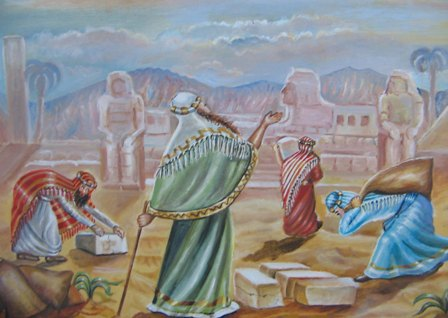

קוד: ביאור:שמות ו9 בתנ"ך
סוג: דיון1
מאת: אראל
אל:
לפעמים, כשאדם סובל מצרות ובעיות רבות, אנחנו רוצים לעודד אותו ולהגיד לו שיהיה בסדר, אבל הוא לא מקשיב לנו. כדי ללמוד איך לנהוג במצב זה, נחזור לתקופה שבה היה עם ישראל במצב דומה, תקופת שיעבוד מצרים:
שמות ו9: "
וַיְדַבֵּר מֹשֶׁה כֵּן אֶל בְּנֵי יִשְׂרָאֵל; וְלֹא שָׁמְעוּ אֶל מֹשֶׁה, מִקֹּצֶר רוּחַ וּמֵעֲבֹדָה קָשָׁה
"
פרעה הכביד את העול על בני ישראל, וה' שלח את משה לבשר לבני ישראל שהגאולה קרובה (פסוק 6): "
לכן אמר לבני-ישראל: אני ה'! והוצאתי אתכם מתחת סבלת מצרים, והצלתי אתכם מעבדתם, וגאלתי אתכם בזרוע נטויה ובשפטים גדלים...
"; אבל בני ישראל לא שמעו אל משה, והפסוק מסביר מדוע:
קוצר רוח הוא מצב שבו הנשימות קצרות ומהירות. איזו רוח היתה קצרה?
1. לפי רוב המפרשים, הכוונה לרוחם של בני ישראל. כשאדם רץ מעניין לעניין, מתנשם ומתנשף, אין לו זמן לשבת ולקחת אויר, ואין לו סבלנות להקשיב לדבריהם של אחרים, גם אם מדובר בבשורות טובות. קוצר הרוח של בני ישראל נגרם מכמה סיבות:
וקוצר הרוח הוא פחדם שלא יהרגם פרעה בחרב, כאשר אמרו שוטריהם אל משה; ועבודה קשה הוא הדוחק, שהיו הנוגשים אצים בהם ולא יתנום לשמוע דבר ולחשוב בו" (רמב"ן) , "
היתה נשימתן קצרה כאיש מבוהל" (כלי יקר) .
כל מי שהוא מיצר, רוחו ונשימתו קצרה , ואינו יכול להאריך בנשימתו" ( רש"י ) .
כאדם שתקצר נפשו בעמלו, ולא ירצה לחיות רגע בצערו מרעתו [אפילו] שירוח לו אחר-כך" ( רמב"ן ) .
אולי לצד שלא היו בני תורה לא שמעו, ולזה ייקרא קוצר רוח , כי התורה מרחבת ליבו של אדם" (אור החיים) , "
כי לא נאמנה את אל רוחם ולא נתנו לב להתבונן" (ספורנו) , "
היה קשה בעיניהם לפרוש מעבודת כוכבים, וכן יחזקאל מפרש ואומר: " איש שקוצי עיניו השליכו ובגלולי מצרים אל תטמאו... איש שקוצי עיניו לא השליכו ואת גלולי מצרים לא עזבו "." ( שמות רבה ו ה)
קוצר רוח הוא מצב נפשי פנימי, ו
עבודה קשה היא מצב חיצוני; השילוב של שני אלה - מצב נפשי פנימי המקשה על הנשימה ומצב חיצוני של עבודה קשה - גורם לכך שבני ישראל אוטמים את אזניהם ואינם מוכנים לשמוע. "
דור מדוכא ומושפל אינו קולט את הנאמר לו: לא את דברי הנחמה לימים קרובים, ולא את דברי ההוד לעתיד הרחוק
"
(נחמה לייבוביץ' ז"ל, עיונים בפרשת השבוע) .
2. ייתכן גם שהכוונה לרוחו של משה. כשאדם מאד רוצה להעביר בשורה חשובה, הוא מדבר במהירות, ומצפה שהשומעים יבינו אותו מייד, אין לו סבלנות להסביר שוב ושוב עד שכולם יבינו, וכתוצאה מכך המסר אינו נקלט. בני ישראל לא שמעו אל משה מקוצר רוח - בגלל שמשה היה קצר רוח בהסבריו.
לפי פירוש זה, קוצר רוח מתאר התנהגות של הדובר, ו עבודה קשה מתארת מצב של השומע; השילוב של שני אלה - דובר חסר-סבלנות ועבודה קשה ומייסרת - גורם לכך שבני ישראל אוטמים את אזניהם ואינם מוכנים לשמוע.

--- ציור מאת אהובה קליין (c) ---
(ע"פ הרב חנן פורת, "עוד יישמע!", "הגדת אור ודרור" עמ' 82).
מה ראה ריבונו של עולם לשלוח את משה להביא לעם בשורה שאין האוזניים כרויות לשמעה? הן כלל גדול נקוט בידינו: "
כשם שמצוה לומר דבר הנשמע, כך מצוה שלא לומר דבר שאינו נשמע
"
(בבלי יבמות סה:) !
בשני רבדים עלינו להתמודד עם שאלה זו. האחד נוגע ל"חיי שעה" - לדור היוצא ממצרים; והשני ל"חיי עולם" - לכל הדורות כולם:
1. כבר ברובד הראשון - בדור יוצאי מצרים - ראוי להבחין בין המציאות המרה שעל פני השטח, לבין מה שמתחולל מתחת לפני השטח... ריבון העולמים מלמד את משה כי גם במציאות מרה זו אין להתייאש, ודבריו הנופלים לכאורה על צחיח סלע סופם לחלחל ולהגיע למעמקי תודעתו של העם... כבר עתה סוללת בשורתו של משה נתיב נסתר, ומאמצת את ליבו של העם בשעתו הקשה, גם אם אינו מודע לכך. כמו בפירושו של ר' מנדל מקוצק על
דברים ו6: "
וְהָיוּ הַדְּבָרִים הָאֵלֶּה אֲשֶׁר אָנֹכִי מְצַוְּךָ הַיּוֹם
עַל לְבָבֶךָ
" - כאשר הלב סגור ואינך יכול להכניס את הדברים
לתוך לבבך, שים את הדברים
על לבבך, כך שייכנסו לשם ברגע שהלב ייפתח.
הכלל "
מצוה שלא לומר דבר שאינו נשמע
", מתייחס לדברי תוכחה וביקורת, שאין להשמיעם באזני מי שאינו מסוגל לקבלם ועלול להתקומם כנגדם; הוא אינו אמור כלפי דברי אמונה וחיזוק, שאותם יש להניח על הלב גם בשעה שאינו פתוח, מתוך תקוה כי תבוא השעה שבה ייפתח והם ייכנסו פנימה.
2. למעלה מזה קיים רובד נוסף, ארוך טווח. מעבר לכתפיו השפופות של דור יוצאי מצרים ניצבים כל הדורות הבאים, וגם אם דור זה לא יהיה מסוגל לקלוט את בשורת הגאולה, הנה יקום דור שיידע לשמוע אותה, ואליו מכוונים הדברים. עוד אלפי שנים לאחר נאומו של משה במצרים ימצאו כל בית ישראל נחמה ותקוה בבשורתו הגדולה, ומיליוני יהודים בכל קצוות תבל ירימו בליל הסדר ארבע כוסות כנגד ארבע לשונות של גאולה שנזכרו בנאום זה. בשורת הגאול שבפיו אינה בשורה לשעה אלא בשורה לדורות.
מהפסוק שלנו ניתן ללמוד, שכאשר רוצים לבשר בשורה טובה לאדם הנמצא במצוקה, צריך לוודא שלשומע יהיה אורך רוח :
בנוסף לכך, צריך שיהיה גם לנו - הדוברים - אורך רוח : לנשום עמוק לפני שמדברים, להסביר לאט ובנחת, ולהישאר רגועים גם כאשר השומעים אינם מקבלים את דברינו.
"
יהיו דברים אלה קריאת כיוון לכל המורים והמחנכים עומדים לא אחת מתוסכלים, נוכח חוסר הרצון והיכולת של תלמידיהם לקלוט את דבריהם: גם אם נדמה לכם לעיתים שהינכם מדברים אל הקיר, והדברים נופלים על אזניים אטומות - אל תתייאשו. הוסיפו דבר ויהי מה! דבר אמת - גם אם יתמהמה - עוד יישמע!
"
(הרב חנן פורת, שם) .
גם בספר יחזקאל מסופר שבני ישראל לא שמעו אל דברי ה' - אולם שם דברי ה' מתייחסים לפרישה מעבודה זרה; ראו שמות רבה ו ה; ראו גם בני ישראל במצרים - עובדי אלילים.
מצבו של משה, המדבר אל בני ישראל שאינם שומעים אליו, מזכיר את החכם מ
משל המערה של אפלטון.